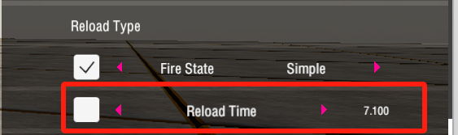
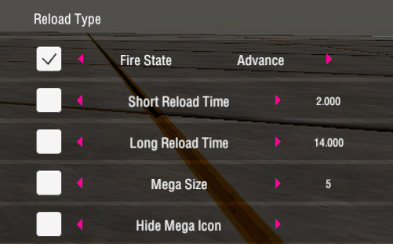
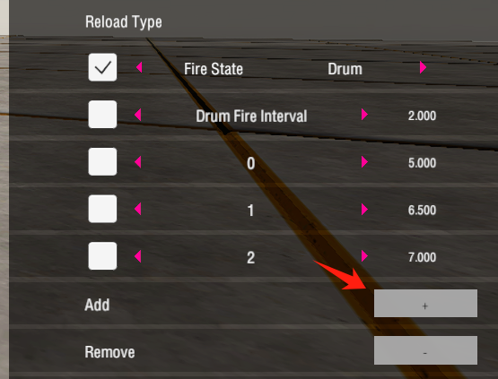
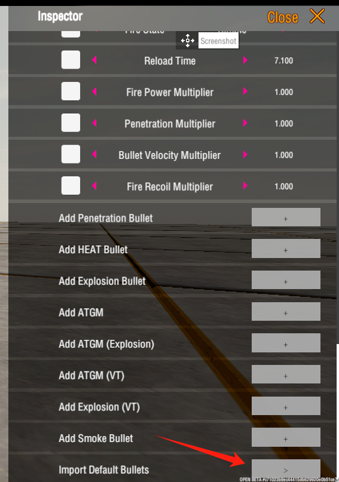
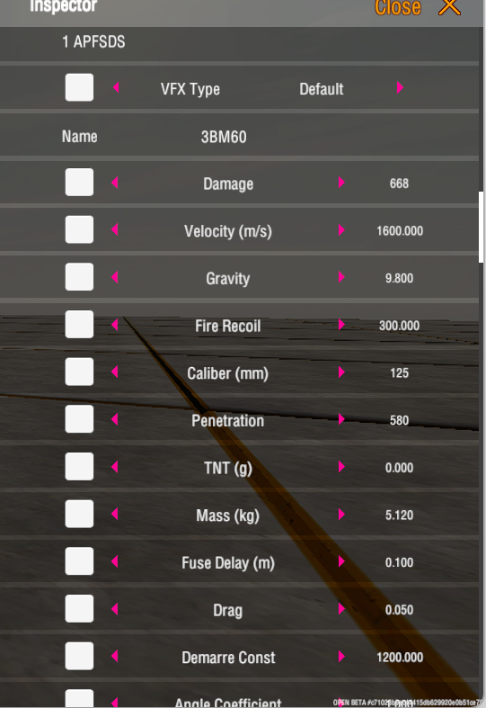
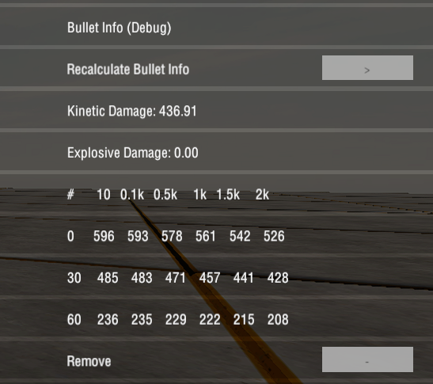

3. Gun Tutorial 火炮教程
Custom Reload Type 自定义装填类型
Simple 简单
Traditional single-shot shells only require setting the reload time.
传统的单发炮弹，只需要设置装填时间。

Advance 高级
For multi-shot magazine guns, you need to set the small reload time, the large reload time, and the magazine size.
多发弹夹炮，需要设置小装填，大装填，以及弹夹长度。

If the magazine size is too large, you can hide the icon to avoid a cluttered UI.
如果弹夹长度过大，可以隐藏图标，以避免 UI 过于拥挤。
Drum 弹鼓
Invented by the Italians, the drum mechanism is an optimized type of magazine gun that allows you to fire while loading backup rounds. You need to set the reload time for each backup round and the minimum firing interval of the drum.
由意大利发明的弹鼓机制，弹夹炮的优化类型，可以一边装载备发弹，一边开火。需要设置每个备发弹的装填时间，以及弹鼓的最小射击间隔。

Import Default Bullet 导入现有炮弹
You can modify the specific parameters of the default shells by importing the default shells.
你可以通过导入默认炮弹的方式，以修改默认的炮弹的具体参数。
If you wish to fully customize your shells, you can also directly add different types of shells using the add button above.
如果你希望完全自定义你的炮弹，也可以直接通过上方的添加按钮，添加不同类型的炮弹。

The shell data will display the basic parameters of the shell, along with some specialized parameters in modular mode.
在炮弹数据中会显示炮弹的基本参数，与模块模式中的一些专用参数。

In the debugging information of the shell, you can see the calculated data. If you modify the parameters of the shell, you need to click the recalculate button.
在炮弹的调试信息中，你可以看到计算后的相关数据。若修改了炮弹的参数，需要点击重新计算按钮。

Demarre Formula 德马尔公式
In our game, the penetration mechanics are based on the De Marre formula, which is used to estimate the penetration of a shell against armor. Here is an explanation of the formula and its parameters.
在我们的游戏中，穿甲弹机制基于德马尔公式，用于估算穿甲弹对装甲的穿透能力。以下是公式及其参数的解释。
$ \text{Penetration 穿深} = \left( \frac{m \cdot v_{\text{rel}}^2}{d^3 \cdot D_{\text{term}}} \right)^{\frac{1}{C_{\text{armor}}}} \cdot d \cdot K_{\text{nap}} \cdot 100 $
- $ m $ is the shell mass (kg) 是炮弹的质量 （千克）；
- $ v_{\text{rel}} $ is the shell velocity component in the direction of the plate, calculated as:
炮弹命中装甲板的速度，如下计算：$ v_{\text{rel}} = v_d \cdot \cos(\theta \cdot 0.85 \cdot C_{\text{angle}}) $ where 其中 $ C_{\text{angle}} $is penetration vs angle coefficient 是斜穿系数；and where 其中 $ v_d = v_0 \left( 1 - \frac{\lambda d}{v_0} \right) $ $ \lambda $ is the drag 是阻力；$ v_0 $is the initial velocity 是炮弹初速度；
- $ d $ is the shell diameter 是炮弹直径 （单位米）；
- $ D_{\text{term}} $ is the De Marre term 是德马尔项, calculated as 计算如下： $ D_{\text{term}} = \left( D_{\text{const}} \right)^2 \cdot d^{-0.1} $ where 其中 $ D_{\text{const}} $is the De Marre constant 是德马尔常数；
- $ C_{\text{armor}} $ is the armor material coefficient 是命中装甲板的材料系数；
- $ K_{\text{nap}} $ is the adjustment factor based on the TNT ratio 是基于 TNT 比例的调整系数 , calculated as follows 计算如下 : $ K_{\text{nap}} = \begin{cases} 1 & \text{if } \frac{\text{TNT}}{m} < 0.65 \ 1 + \frac{\left(\frac{\text{TNT}}{m} - 0.65 \right) \cdot (0.93 - 1)}{1.6 - 0.65} & \text{if } 0.65 \leq \frac{\text{TNT}}{m} < 1.6 \ 0.93 + \frac{\left(\frac{\text{TNT}}{m} - 1.6 \right) \cdot (0.9 - 0.93)}{2 - 1.6} & \text{if } 1.6 \leq \frac{\text{TNT}}{m} < 2 \ 0.9 + \frac{\left(\frac{\text{TNT}}{m} - 2 \right) \cdot (0.85 - 0.9)}{3 - 2} & \text{if } 2 \leq \frac{\text{TNT}}{m} < 3 \ 0.85 + \frac{\left(\frac{\text{TNT}}{m} - 3 \right) \cdot (0.75 - 0.85)}{4 - 3} & \text{if } 3 \leq \frac{\text{TNT}}{m} < 4 \ 0.75 & \text{if } \frac{\text{TNT}}{m} \geq 4 \end{cases} $
This formula combines all the terms to calculate the penetration of the shell against armor, taking into account the mass, velocity, diameter, material properties, impact angle, and explosive charge of the shell.
该公式结合所有参数来计算炮弹对装甲的穿透力，考虑了炮弹的质量、速度、直径、材料特性、入射角度和装药量。